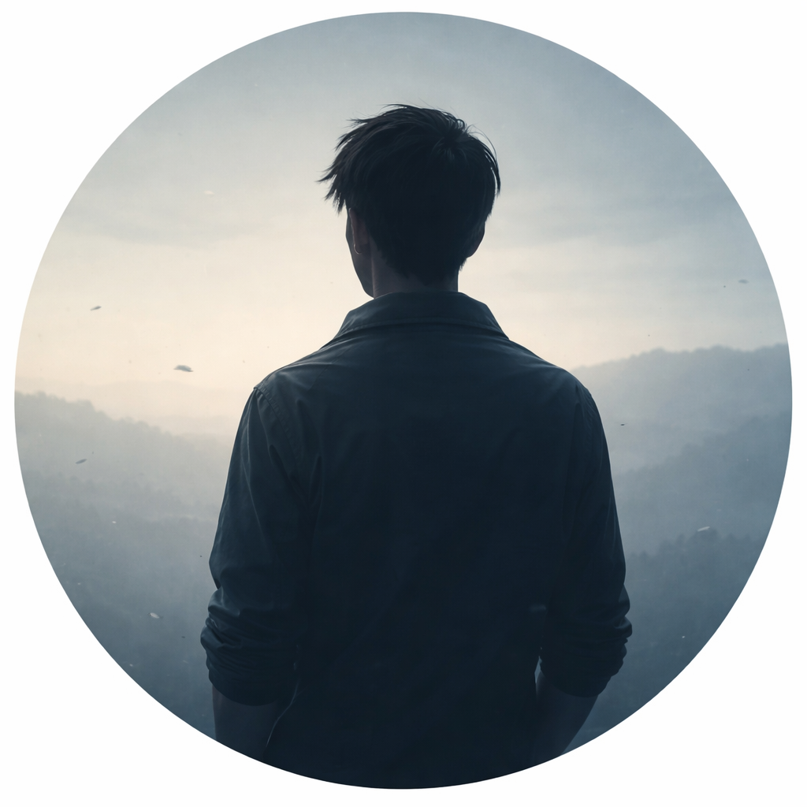

Tôi không viết để khuyên ai bỏ cuộc.
Cũng không viết để ca ngợi một lối sống nào đó là đúng hơn phần còn lại.
Tôi viết cho những người vẫn đang đi —
đi học, đi làm, đi qua từng ngày rất nghiêm túc —
nhưng đôi khi dừng lại và tự hỏi
mình đang sống vì điều gì.
Có những con đường được gọi là ổn định.
Chúng an toàn, dễ bước, và được nhiều người đi trước chỉ sẵn.
Nhưng không phải ai đi trên đó cũng biết
mình đang đi về đâu.
Tôi từng đi rất lâu như vậy.
Không lười. Không buông thả.
Chỉ là đi theo quán tính,
và tin rằng rồi mọi thứ sẽ tự ổn.
Series này không hứa hẹn câu trả lời.
Nó chỉ đặt lại những câu hỏi
mà tôi đã bỏ qua quá lâu.
Nếu bạn đọc và thấy mình trong đó,
hãy hiểu rằng bạn không cô độc.
Và nếu bạn chọn tiếp tục đi,
ít nhất hãy đi với sự tỉnh táo.